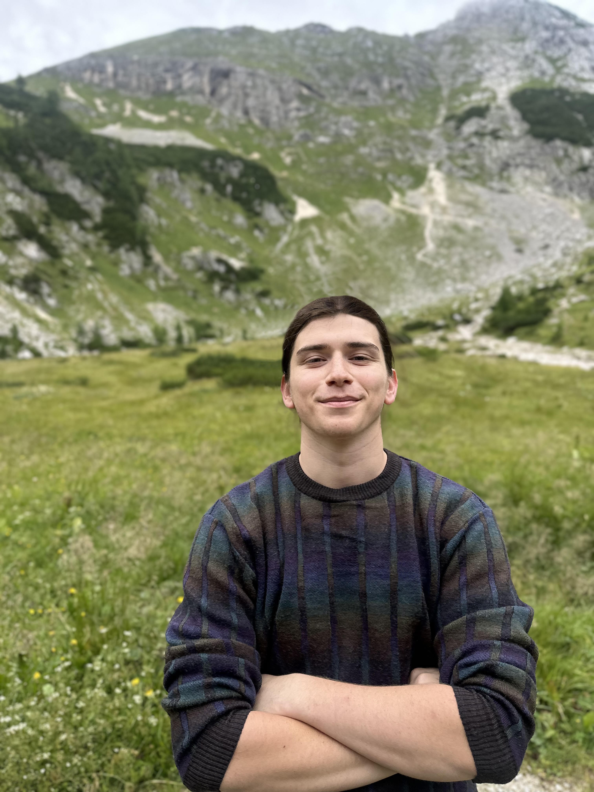
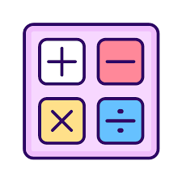

Private Tutoring with Joseph
I am a third-year Astrophysics major with a deep passion for both learning and teaching. I offer personalized tutoring designed to meet each student's unique needs. Whether your child needs help catching up, building confidence, or strengthening an already strong foundation, I focus on clear understanding and practical skills.
Limited Availability: I have a small number of slots each week to ensure personalized attention. Early booking is recommended to secure a session.

Mathematics (Grades 3rd-12th): Arithmetic, algebra, geometry, and early advanced topics such as calculus; with focus on developing strong problem-solving skills.
English (Grades 3rd-8th): Reading comprehension, writing, grammar, spelling, and test preparation.
My Teaching Philosophy: Learning requires active effort from both student and tutor. My goal is to empower students to study independently, build confidence, and take ownership of their progress.
If a student isn’t ready to engage, I will be fully transparent and won’t encourage unnecessary lessons — I value your time and investment.
If a student isn’t ready to engage, I will be fully transparent and won’t encourage unnecessary lessons — I value your time and investment.
Frequently Asked Questions
What is your rate?
My tutoring rates are personalized for each client and situation to ensure the best value.
Do you offer online/Zoom tutoring?
Not currently, but if enough interest is shown, I am open to offering online sessions in the future.
Where do you tutor?
I am based in the Pico area of Los Angeles and primarily offer in-home private tutoring. In some cases, I am also happy to meet at local libraries—preferably ones with study rooms—if travel distance makes home visits difficult.
Do you offer SAT or standardized test prep?
At this time, I do not offer SAT tutoring. However, if enough interest is shown, I plan to provide this in the future.
For any additional questions or inquiries, feel free to contact me anytime. I’m happy to discuss your child’s needs and how I can help them succeed!
Schedule a Session
Schedule a Session